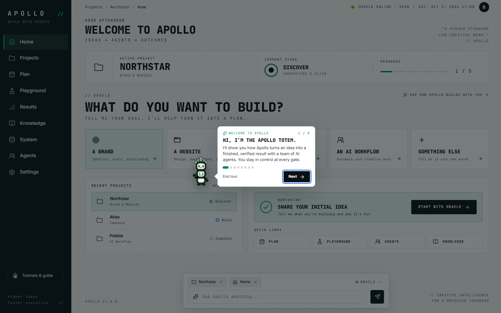
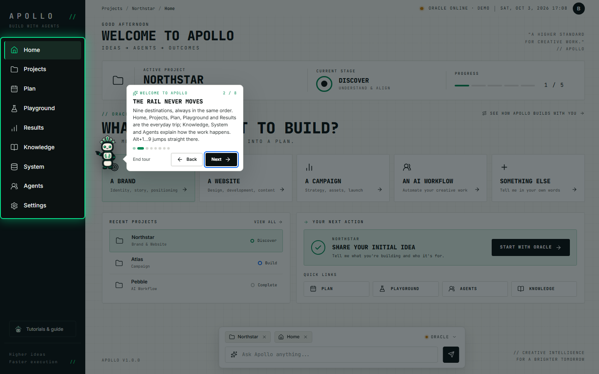
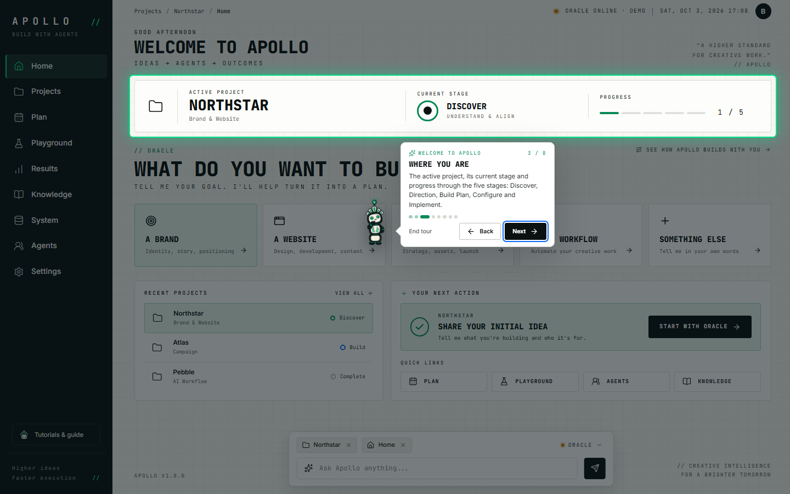
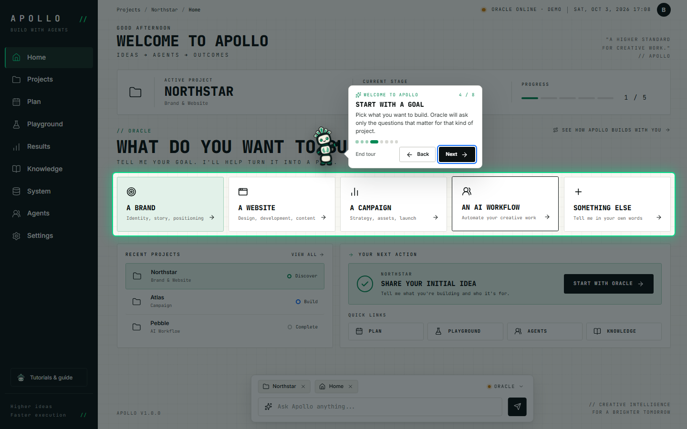
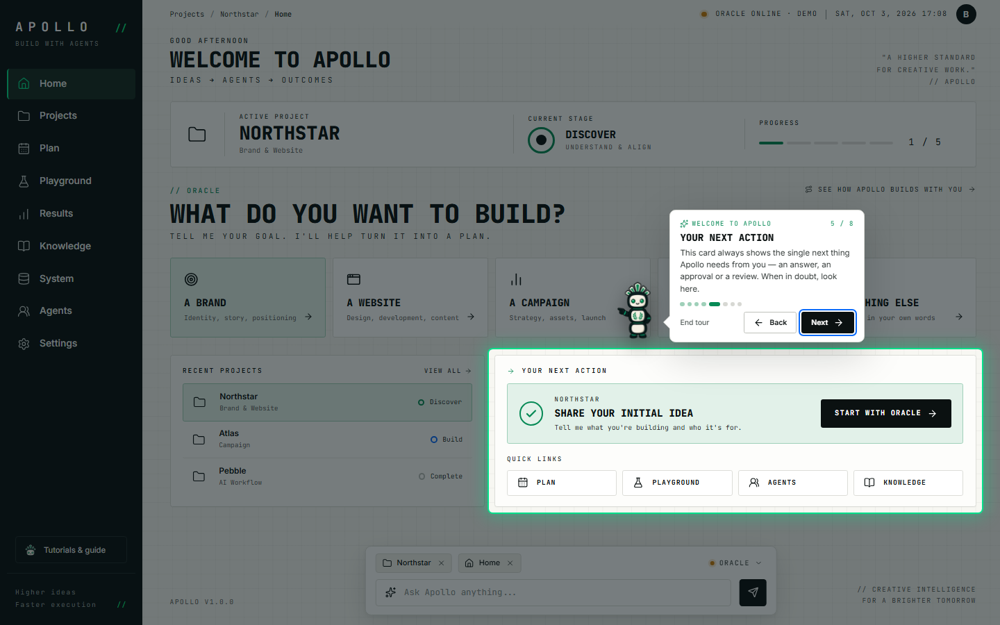
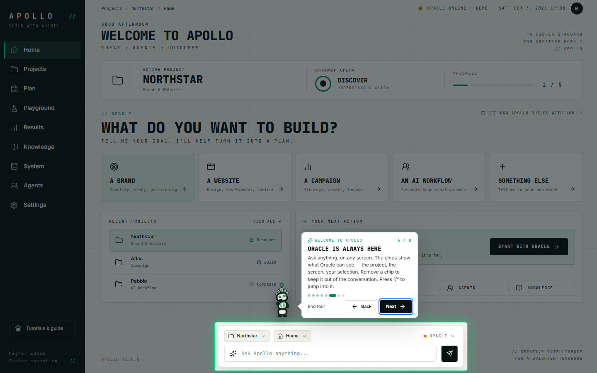
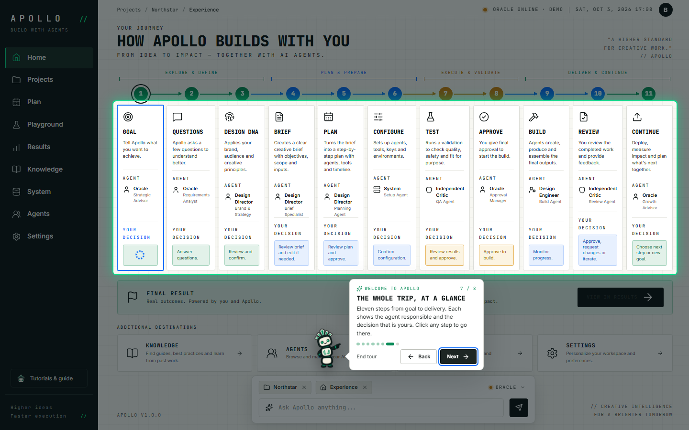
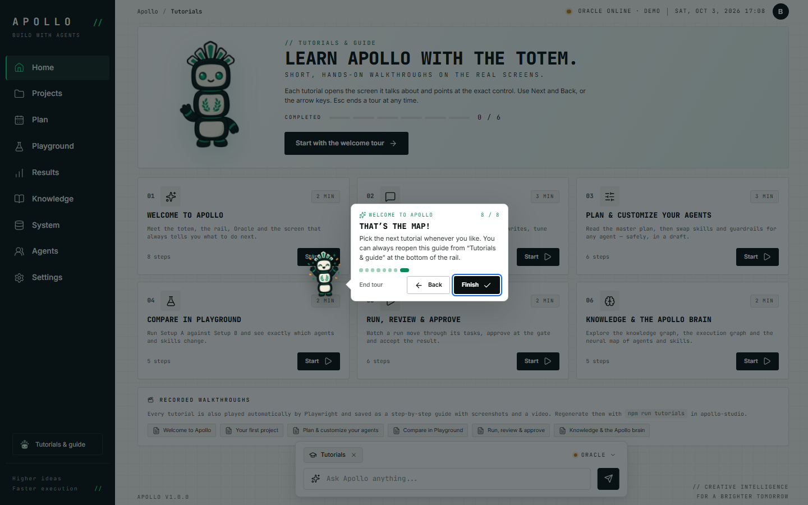

Recorded automatically with Playwright on a scratch copy of the data.
- 01

Hi, I’m the Apollo Totem.
I’ll show you how Apollo turns an idea into a finished, verified result with a team of AI agents. You stay in control at every gate.
Screen:
#/home
- 02

The rail never moves
Nine destinations, always in the same order. Home, Projects, Plan, Playground and Results are the everyday trip; Knowledge, System and Agents explain how the work happens. Alt+1…9 jumps straight there.
Screen:
#/home
- 03

Where you are
The active project, its current stage and progress through the five stages: Discover, Direction, Build Plan, Configure and Implement.
Screen:
#/home
- 04

Start with a goal
Pick what you want to build. Oracle will ask only the questions that matter for that kind of project.
Screen:
#/home
- 05
Your next action
This card always shows the single next thing Apollo needs from you — an answer, an approval or a review. When in doubt, look here.
Screen:
#/home
- 06
Oracle is always here
Ask anything, on any screen. The chips show what Oracle can see — the project, the screen, your selection. Remove a chip to keep it out of the conversation. Press “/” to jump into it.
Screen:
#/home
- 07
The whole trip, at a glance
Eleven steps from goal to delivery. Each shows the agent responsible and the decision that is yours. Click any step to go there.
Screen:
#/journey
- 08

That’s the map!
Pick the next tutorial whenever you like. You can always reopen this guide from “Tutorials & guide” at the bottom of the rail.
Screen:
#/tutorials